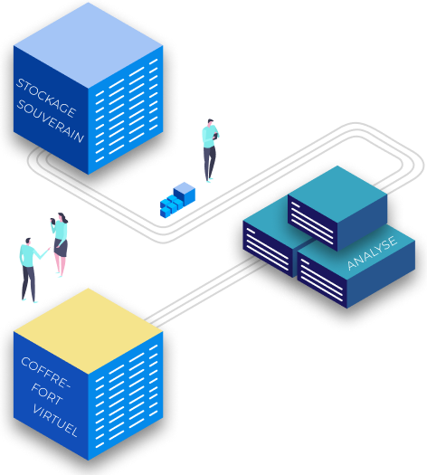

Sauvegardes et coffre-fort
Pour être en mesure de déterminer une sauvegarde saine la plus récente possible n’est pas une chose
facile. Elle requière une expertise sur de nombreux domaines et une capacité d’évaluation des
risques par rapport au type d’attaque que seul les grands groupes peuvent se payer. C’est pourquoi
la sélection de la sauvegarde ce fait avec la date des première traces d’attaque. Mais alors, on
peut remonter très loin dans les sauvegardes et ainsi perdre énormément de données et de temps.
C’est pourquoi le coffre-fort virtuel est très important si l’on souhaite un retour à la normal le
plus rapide possible. C’est un système qui va sauvegarder un premier stockage dans un autre en
vérifiant son intégrité.
L’intégrité des données est la cohérence et l’exactitude des fichiers informatique. La garantie de
l’intégrité est alors le fait de pouvoir assurer que vos données ne seront pas modifié ou altéré par
une personne extérieure. La garantie de l’intégrité est le plus haut niveau de protection possible.
Cette analyse est réalisé par un système appelé bac à sable qui va vérifier à l’aide d’une sélection
d’antivirus toutes les données pour les copier du stockage d’origine vers le coffre-fort.
Fonctionnement de
CloudHarbor
Vos données sont enregistrées vers votre stockage souverain.
Vous les utilisez tous les jours.

Plusieurs fois par jours, notre système de vérification va analyser vos données
pour assurer leur intégrité. Une fois garantie, elles seront copié dans votre
coffre fort virtuel.
Vos données sont systématiquement vérifiées, d’abord avec une combinaison d’antivirus performants
pour identifier rapidement les menaces connues. Puis avec un système d’analyse morphologique
pour détecter les attaques inconnues. Cette analyse permet également de générer un rapport de
remédiation MITRE en cas d’attaques.